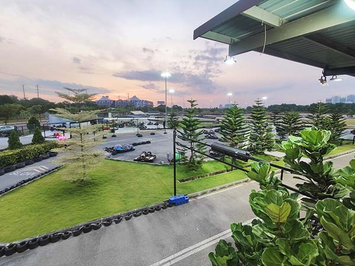
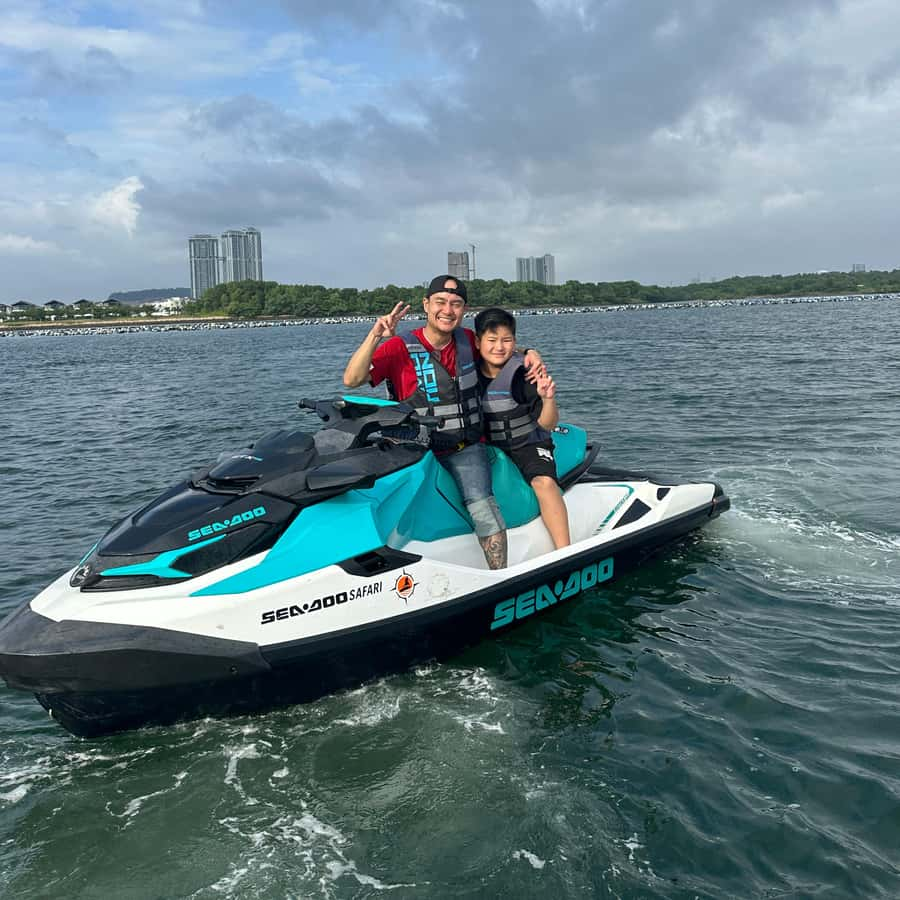
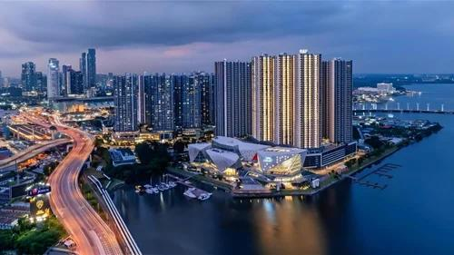
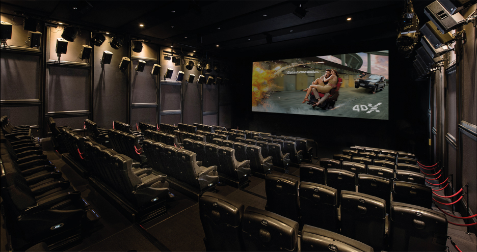
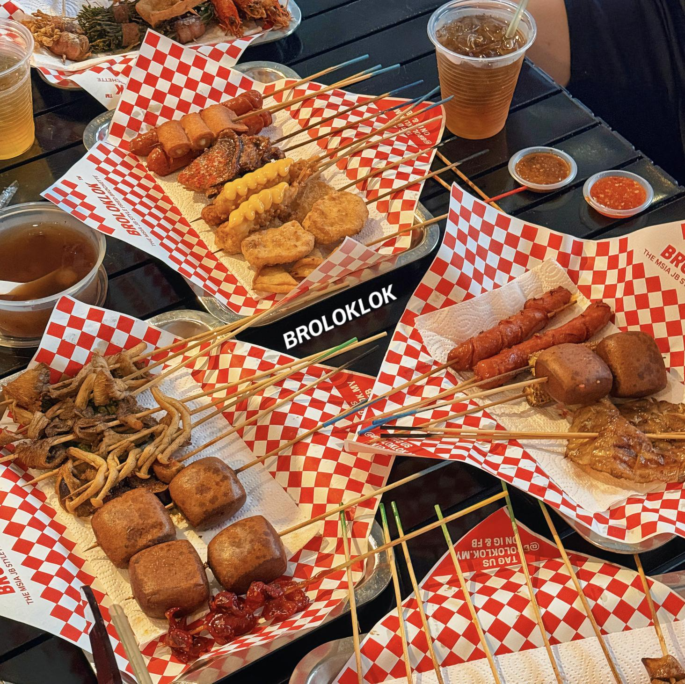
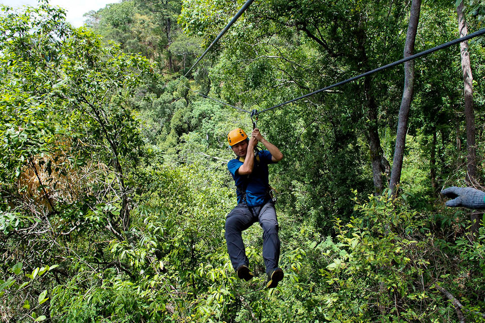
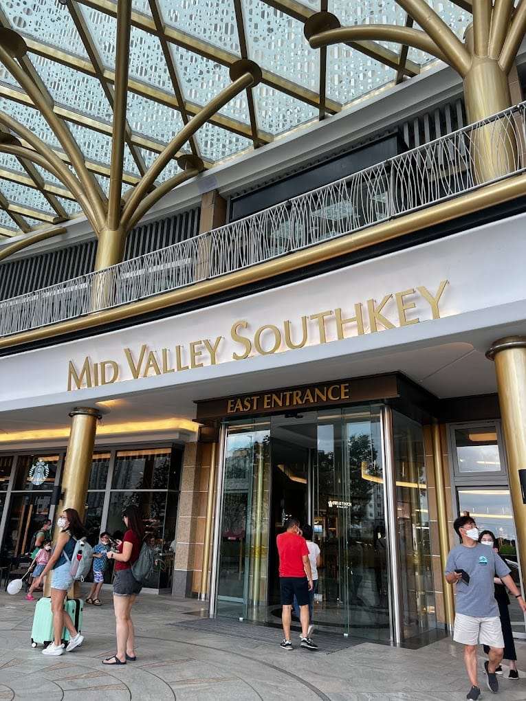

新山 2天1夜周末游 · 攻略
新加坡出发 · 10-17（周六）～10-18（周日）· 2 人 · 住一晚 · 去程 Tuas 二通道 / 返程 Woodlands
A 必去：RUD 卡丁车 A 必去：JetSki B 弹性：R&F 日落（12:00 查 AQI） 已确认：4DX 18:40 B 弹性：Mount Austin B 弹性：Hutan 滑索
时效提示 ：出行前请再核验天气／烟霾（PSI）、4DX 场次在售、RUD 营业与 Tuas 拥堵。中马护照互免签至 2026-12-31，抵马前 3 天填 MDAC。汇率参考 1 SGD≈3.19 MYR。（信息核验：2026-10-14）
出发
Tuas Link MRT（绿线终点）新加坡西部出发 · 步行接跨境巴士
跨境交通
CW7 → 转 CW7LTuas Link 上 CW7 → 关口转 CW7L 到 Anjung Medini · 全程约 1h
通关
去程 Tuas · 返程 WoodlandsTuas 06:00–00:00；Woodlands 24h 口岸
日落锚点
R&F 16:30–17:1512:00 查 AQI＋天气：达标才去；烟霾/雨改分支 C 提前逛 Mid Valley；17:15 前离场去晚餐
4DX 场次
周六 18:40 Street Fighter限时特映（10-17 最后一场）· 1h59m
预算（2 人）
约 RM1000–1700含 10–15% 机动额度 · 估算
MAP
行程点位地图
只标注行程内的点位：红＝已确认必去 ，橙＝时间足够才去 ；点击标记看时间带与亮点。
底图默认离线瓦片（随文件本地存储，断网也能显示），右上角「底图」可切换高德 / Esri 在线。点击标记可查看地点名称、时间带与亮点。导航：各点导航目的地见下方逐点「导航」行。
OVERVIEW
行程速览
10-17 周六出发、住一晚、10-18 周日返程。Day1 刺激娱乐为主线（硬锚点：18:40 4DX），Day2 轻装逛街返程。
日期 主题 核心内容 住宿 10-17 周六 刺激娱乐＋新奇体验 RUD 卡丁车 → JetSki → R&F 日落 → GSC 4DX → 晚间弹性 Mount Austin Mid Valley／KSL 区 10-18 周日 轻装返程 自然醒 → 退房 → Mid Valley 逛街午餐 → 14:30 返程避峰 —
PREPARE
行前准备（出发前 1 天核验）
对照打勾：携带清单、过关与跨境交通、预算分项、预订待办。
出发前携带清单 出发前 1 天核对
展开携带清单（必带／建议／可选 3 档 25+ 项）
过关、跨境交通与支付 去程 Tuas · 返程 Woodlands
过关交通与支付详情
去程（Tuas 二通道）： Tuas Link MRT 绿线终点站 → CW7 （该站唯一跨境巴士，步行约 2min 到对面站牌 25421；关口不可步行，必须坐巴士）→ Tuas Checkpoint 下车出境 → 同车过桥到 Sultan Abu Bakar CIQ（2nd-Link 关口） 下车入境 → 出关转 CW7L （出示 CW7 车票／刷同一卡）→ Mydin Anjung（Anjung Medini） 下车步行约 10min 到 RUD。全程约 1h、CW 巴士 2026-10 起全线无现金 （刷银行卡／SimplyGo／ezlink，深夜清早 ezlink 可能不可用，备银行卡兜底）；CW7 每日 05:00–22:15、约 15min 一班；CW7L 从 CIQ 出发高峰约 30min 一班（首班 5:30、末班 22:30），衔接顺畅。拥堵：周六早上 Tuas 出关属低峰（6am–4pm 为整周最佳窗口，清关通常 <10min），9:00 进关基本顺畅 ；10-17 周六无学校假期叠加，比 Woodlands 高峰好很多。
步骤 做什么 参考时长 1 Tuas Link MRT 出站 ，对面站牌 25421 等 CW7（关口不可步行，必须坐巴士）步行约 2min 2 上 CW7 刷卡（无现金），坐到 Tuas Checkpoint ——全部下车、带齐行李 10–15min 3 新加坡出境 ：红色自助通道（可 group 一起过）；过关后凭原票／同一张卡重新上车，可上任意 CW （CW3/4/6/7 两口间互通免费）5–10min 4 坐 CW 过二通道桥，到 Sultan Abu Bakar CIQ （2nd-Link 关口）全部下车 5–10min 5 马来西亚入境 ：中国护照走 e-gate 自助闸机（护照竖放），失败走人工递护照＋MDAC5–10min 6 出关转 CW7L （出示 CW7 车票／刷同一卡），到 Mydin Anjung＝Anjung Medini 15–25min 7 步行到 RUD Karting Medini （或 Grab 5min） 约 10min
返程（Woodlands 口岸）： Mid Valley 出发 Grab 跨境 RM40–60（15–20min）或 JB Sentral 乘 KTM（S$5／5min）；Woodlands 24h 开放，周日避开 17:00–21:00 高峰。证件与过关： 中马护照互免签至 2026-12-31；MDAC 抵马前 3 天填（imigresen-online.imi.gov.my，交通填巴士车牌、住宿填酒店地址，提交后截图保存）；中国护照走马来西亚自助闸机（e-gate 刷护照＋人脸识别），护照按要求方向放（部分闸机竖放），失败走人工递护照＋MDAC；新加坡侧红色自助通道可 group 一起过；过关全程禁止录像 。货币与换汇： 汇率参考 1 SGD≈3.19 MYR；建议换 RM250–300（约 S$80–95） ——新加坡换好，或过关后 City Square 一楼换汇点补；别在新山 ATM 取现 （每笔 S$7 服务费＋转换费不划算）。支付： DBS Visa／Mastercard（信用卡／借记卡）在新山商场、餐厅、GSC、Grab 通用；境外刷卡手续费最高 3.25%——大额（RUD、4DX、酒店、购物）刷卡，小额现金。现金刚需： Hutan 滑索 RM90（2 人，去的话）＋夜市／宵夜 RM120–150＋零花与打车兜底 RM50–80。DBS 出发前： 卡默认境外芯片/闪付可直接刷、无需设置；可选 ：digibank → More → Travel Mode 填 10-17 马来西亚（防大额消费被风控拦截）；借记卡记好 PIN（插卡/取现用）；境外磁条默认关闭属防盗刷设计，遇到老旧刷卡机刷卡失败才需临时开启。提醒： 各点营业时间出发前再现场核实一次（网上攻略可能过时）；返程如需申报新加坡入境（SG Arrival Card，按个人身份确认）。
美食候选（现场自选） 当天自选
按 Day1 行程沿线整理，具体吃什么当天自选（附抖音实拍一手料）
午餐 · Medini（RUD 卡丁车后）
玖鼎猪肚鸡火锅 ——猪肚鸡养生火锅，午餐套餐划算，近 Medini（Iskandar Puteri）。官网 Klasik Kopitiam ——马来菜，RM1–20，营业 07:30–16:00，Medini 商圈。Mall of Medini 商场餐饮 ——快餐／咖啡最省事，玩完卡丁车直接吃。
晚餐 · Mid Valley（17:35–18:20，4DX 前正餐，四选一）
华阳茶室 Oriental Kopi（首选·南洋特色） ——椰浆饭＋酥皮蛋挞＋冰火菠萝包＋白咖啡，南洋国民茶室；Mid Valley 有店。注意排队约 30min： 17:35 一到先取号，赶时间改备选。抖音实拍 Uncle Roger 餐厅 FUIYOH! ——网红主厨开店，招牌炒饭／炒面锅气十足＋炸鸡参巴，出餐快、本地风味新店（2026-10 实测）。抖音实拍 Sumido 日式汉堡饭 ——3 种肉饼任选、肉汁足，新开日式快餐，时间紧的首选。抖音实拍 新民记香港茶餐厅／Sukiya 牛丼（快捷兜底） ——港式炆牛腩面或日式牛肉饭，出餐最快，怎么都不会赶不上 18:20 取票。
宵夜 · Mount Austin（20:40 后，三选一）
南洋街九号煲仔面 ——煮炒＋烧烤＋生蚝 RM15/3 颗，16:30–04:30。抖音实拍 思烤人生 ——炭烧烤串＋娘惹酱烧鱼＋蟹黄捞饭，17:00–04:00。抖音实拍 夜猫 Lok Lok ——串串 RM0.7 起，开到 02:00。抖音实拍
特色必尝（行程可衔接）
Ah Soon 亚顺肉骨茶 ——50 年老字号，08:00–16:00，Taman Sri Tebrau。抖音实拍 八戒肉骨茶（KSL） ——药材汤底浓，Day2 逛 KSL 可吃。洪家班叻沙 ——Johor Jaya 41 年老字号，08:30–16:30（周一休）。抖音实拍 Kopilicious 早餐店 ——13 年老店，咖啡＋烤面包＋半熟蛋，经典新马早餐。抖音实拍
备注
Johor Jaya Pasar Malam 夜市仅周二 16:00–22:00 开，10-17（周六）不可用，已排除。
Senibong 海鲜（浅水湾海番村）在 JetSki 附近，Day1 下午时间紧，作备选。
伴手礼（顺路采购，现场自选）
华阳茶室 Oriental Kopi ——原味凤梨酥（皮酥馅厚、真实果肉）＋经典白咖啡＋椰子/斑斓咖椰酱；Mid Valley 有店 ，Day1 晚餐或 Day2 逛街顺手买，最顺路。抖音实拍 ·清单 Beryl's 巧克力 ——大马国民巧克力品牌，口味多、大小包装任选，商场超市/专柜都有，送礼囤货首选。抖音实拍 猫山王榴莲系列 ——夹心黑巧克力、冻干、榴莲薯片，独立小包装便携，商场超市有。抖音实拍 Oriental 叻沙面／咖喱面 ——回家煮就能还原门店风味，超市方便食品区。抖音清单 OldTown 白咖啡／BOH 红茶礼盒 ——大马国民咖啡/茶礼盒，送人体面。抖音实拍
预算分项估算（2 人） 约 RM1000–1700
查看预算明细
项目 明细 估算（RM） 说明 交通 去程 MRT＋CW7 转 CW7L；当地 Grab 3–4 程；返程 Grab／KTM 120–200 估算 住宿 KSL／St. Giles／Opero 一晚 200–470 按所选酒店 门票 RUD Stage 2×2＝158（待付）；JetSki 2 人＝500（已付） 658 JetSki 500 已付＋RUD 158 待付 4DX 2 张（已付） 88 RM44/张 餐饮 早／午／晚（宵夜） 150–300 估算 机动 购物＋杂项 10–15% 按需
预订待办（行前打勾） 出发前完成
预订待办清单（12 项）
TIMELINE
Day1（10-17 周六）时间线 A/B 分支
倒推自 18:40 电影硬锚点；09:00 Tuas Link 汇合（你 08:00 出门、朋友 07:30 出门），12:45 设弹性触发检查点——状态好走分支 A（加 Hutan 滑索 14:00 场），否则走分支 B（从容休整直奔 Senibong）。12:00 另设天气检查点 ：烟霾（AQI≥100）或下雨 → 跳过 R&F（分支 C，提前到 Mid Valley 晚餐＋逛商场）。三餐均已纳入时间线 ：午餐 11:45–12:45（Medini）、晚餐 17:35–18:20（Mid Valley 正餐）、宵夜 21:30–23:00（Mount Austin 弹性）。RUD 每日 11:00 开门、到店买票，两人各 1 场约 45min 收工。
倒推逻辑：18:40 电影为硬锚点 → 18:20 取票、17:35–18:20 晚餐（Mid Valley 正餐）；R&F 傍晚散步 16:30–17:15 且 17:15 前离开（12:00 查 AQI＋天气，烟霾/雨走分支 C 提前逛 Mid Valley）；JetSki 15:30/16:00 场；上午 09:00 Tuas Link 汇合（周六早 Tuas 低峰，过关顺畅）。圆点：红＝A 档必去 · 橙＝B 档弹性 · 绿＝已确认 。
07:30
朋友从芽笼出发 绿线全程直达 Tuas Link MRT · 约 90min（跨全岛）
08:00
你从西部出发 地铁到 Tuas Link MRT · 约 60min
09:00
Tuas Link MRT 汇合 上 CW7（05:00–22:15 · 约 15min 一班，基本随到随上）
09:15–10:15
过关＋转车到 Medini 周六早 Tuas 出关低峰（6am–4pm 最佳窗口）→ CW7 到 Tuas Checkpoint 下车出境 → 同车到 2nd-Link CIQ 入境 → 转 CW7L 到 Anjung Medini
10:15–10:40
Anjung Medini → RUD Mydin Anjung 下车步行约 10min（或 Grab 5min）· 11:00 开门，到店排队买票。若 11:00 前早到 ：去隔壁 Mall of Medini（10:00 已开门）Klasik Kopitiam 等咖啡店早餐/喝咖啡候场，10:50 回 RUD 报到
11:00–11:45
A1 RUD 卡丁车 到店买票（App 无场次预约）· 两人各 1 场 Stage 2（RM79/场·10min/场）· 含报到／简报／等位，约 45min 足够
11:45–12:45
午餐（Mall of Medini） 与卡丁车同一区域 · 合并时段
12:45
弹性触发检查点 RUD＋午餐提前完成且顺畅 → 分支 A（去 Hutan 滑索 14:00 场）；任一延误 → 分支 B（从容休整直奔 Senibong）
分支 A
B Hutan Bandar 滑索 12:45 出发 → 13:15 到公园逛 → 14:00–15:00 滑索＋绳索（RM30＋RM15）→ 15:00 前离场去 Senibong
分支 B
从容午餐＋休整 15:00 出发去 Senibong · 15:20 报到休息（约 2h45min 缓冲），不赶场
15:00–15:20
→ Senibong Cove Grab 15–20min（分支 A 用）
15:20–16:00
Senibong 报到·换装·讲解 缓冲；JetSki 预约优先问 15:30 场
16:00–16:30
A2 Sea-Doo JetSki 优先 15:30 场（兜底 16:00）· 横渡柔佛海峡至 R&F · 附照片视频
16:30–17:15
B R&F 国际城＋日落 12:00 检查点通过（AQI<100 且无雨）才去 · 步行街／长堤火车／傍晚机位 · 17:15 前必须离场（压缩给晚餐）
17:15–17:35或分支 C
R&F → Mid Valley Grab 15–25min；分支 C（烟霾/雨）：上岸不逗留，16:30 即走 → 约 17:00 到，晚餐更从容
17:35–18:20分支 C：17:00–17:45
晚餐 · Mid Valley（商场内正餐） 四选一见美食章节（华阳／Uncle Roger／Sumido／新民记·Sukiya 兜底），人均 RM15–30；分支 C 时段更宽，可吃正餐
18:20–18:40
取票＋找影厅（顶层 AT-3） 缓冲；4DX 票建议提前订（限时特映易满场）
18:40–20:40
已确认 GSC 4DX · Street Fighter 1h59m · 限时特映（10-17 最后一场）· RM28–42.5
20:40–21:00
散场 · 决定是否去 Mount Austin 精力够才去（弹性）
21:00–21:30
→ Mount Austin Grab 25–30min
21:30–23:00
B Mount Austin 宵夜 Wei Ge Lok Lok（至 04:00）／大郎烧烤（至 03:00）／YOLO（周六至 04:00）· 弹性
23:00–23:30
→ 酒店 Mid Valley／KSL 区 · 20–30min
23:30
ITINERARY
Day1 各点怎么玩
每站含导航、分步玩法（步骤/做什么/参考时长）、避坑与实景参考；A 档必去主线，B 档只在触发条件满足时插入（规则见下方）。
A1
RUD 卡丁车（Medini） 11:00–11:45 · 约 45min（含报到）
新山最大户外卡丁车场，774m／16 弯赛道，油车动力直接、性价比高（RM79/场），每日 11:00–02:00 营业。
导航 / 分步玩法 / 避坑 / 视频
导航： 「RUD Karting Medini」——PTD 200284, Persiaran Medini Sentral 6, Bandar Medini Iskandar；从 Anjung Medini 巴士站步行约 10 分钟。一键导航
步骤 做什么 参考时长 1 RUD Super App 购票（App 无场次预约、仅购票，Stage 2：RM79/10min）；到店按现场轮次排队 出发前＋到店 2 到店报到：出示凭证、选头盔、听安全简报（含旗语） 20min 3 下场跑 10min（户外 774m／16 弯），两人各 1 场，结束看成绩单对比圈速 10min/人

RUD Karting Medini 户外赛道（774m／16 弯 · 每日 11:00–02:00 营业）
加分项： 周六 11:00 开门即到人最少，基本不用排队；跑完看成绩单对比两人圈速；Stage 2 可多人同场竞技
早到候场： RUD 11:00 才开门，若 10:15–10:40 就到——先去隔壁 Mall of Medini（10:00 开门）吃早餐/喝咖啡，10:50 回 RUD 报到；或提前进 RUD 园区看赛道、拍卡丁车
避坑： 穿运动鞋（禁拖鞋）；长发扎起；随身物可寄存；户外赛道雨天可能停开（见备选方案）
实景参考：抖音·EVOLT vs RUD 对比实测 · 抖音·RUD 第一人称一镜到底 · 抖音·00 后体验 RUD Medini
A2
Sea-Doo JetSki（Senibong Cove） 16:00–16:30 · 约 2h（含报到）
Senibong Cove 码头出发的 Sea-Doo Safari，两人一艇沿柔佛海峡驶向 R&F，中途可停船拍照——全程约 45 分钟。
导航 / 分步玩法 / 避坑 / 视频
导航： 「Senibong Cove Marina」码头报到；营业 10:00–19:00、周一闭馆。分支 B 时 15:00 前到可提前休息。一键导航
步骤 做什么 参考时长 1 Klook／GetYourGuide 订 Sea-Doo Safari（Senibong Cove Marina），订后 WhatsApp voucher 上的运营商号码约时段 出发前 2 到码头报到：签免责、穿救生衣、听操作讲解（新手可玩） 20min 3 两人一艇（可换着开）沿柔佛海峡驶向 R&F，中途停留拍照 45min 4 到 R&F 上岸，行程结束 —

Sea-Doo 摩托艇从 Senibong Cove 出发，沿柔佛海峡驶向 R&F
加分项： 两人一艇可换着开，中途停船拍照；部分配套含餐／拍摄（参考视频库）；会湿身但海上风感很爽
避坑： 当天不可取消／退款／改期（改期提前 24h）；雷暴才可因天气退款（小雨照常）；带防水袋、备换洗衣物；参考价约 RM250/人 起
实景参考：抖音·JetSki 一人 RM250 含岛上野餐 · 抖音·Senibong 水上摩托 32km＋海鲜餐 · 抖音·JetSki 海上自驾推荐
B
R&F 国际城日落 16:30–17:15 · 12:00 检查点（AQI＋天气）达标才去
JetSki 终点上岸就是 R&F Princess Cove——海滨步道正对新加坡天际线，是本次最出片的日落机位。
导航 / 分步玩法 / 避坑 / 视频
导航： 「R&F Princess Cove」；从 Senibong 骑 JetSki 到 R&F 约 45 分钟，也可叫 Grab。一键导航
步骤 做什么 参考时长 1 JetSki 终点上岸，沿海滨步道散步 20min 2 找日落机位：对岸新加坡天际线方向拍照（烟霾天效果打折） 20min 3 17:15 前叫 Grab 前往 Mid Valley 15–25min

R&F Princess Cove 滨水天际线（日落机位朝对岸新加坡，烟霾天效果打折）
加分项： 日落前 5 分钟到位，低角度蹲拍对岸天际线更完整；时间富余可沿海滨步道走到观景平台
避坑： 烟霾天能见度差时日落效果打折（PSI 高可提前改室内）；12:00 检查点 ：AQI≥100 或预报有雨 → 直接走分支 C（上岸不逗留，提前去 Mid Valley 晚餐）；17:15 必须离场 ，否则赶不上 17:35 晚餐＋18:40 的 4DX
实景参考：抖音·在新山看新加坡日落 · 抖音·柔佛滨海黄昏打卡（Puteri Harbour）
已确认
GSC 4DX · Street Fighter 18:40–20:40 · 约 2.5h
Mid Valley 顶层 GSC 的 4DX 动感影厅——座椅震动＋风／雾／灯光特效，限时特映 Street Fighter，10-17 是最后一场。
导航 / 分步玩法 / 避坑 / 视频
导航： 「GSC The Mall Mid Valley Southkey」（商场顶层）；R&F → Mid Valley 约 25 分钟车程，商场有 4 个入口。一键导航
步骤 做什么 参考时长 1 GSC App／官网或 WeTix（wetix.my）订周六 18:40 场 出发前 2 到 Mid Valley 顶层 GSC 取票／扫码入场，提前 15min 到 — 3 看 4DX 场（动感座椅＋风／雾／震动特效） 1h59m

4DX 动感影厅：座椅震动＋风／雾／灯光特效（Mid Valley 顶层 GSC）
加分项： 提前 15 分钟到取票选座；观影后可顺路逛 Mid Valley 一层夜市档口（22:00 前）
避坑： 限时特映仅 10-14／10-17 两日、10-17 最后一场，易满场尽早订；票价 RM28–42.5；4DX 座椅晃动＋喷风，易晕动者慎选
实景参考：抖音·4D 观影晕动实测（避坑向） · 抖音·4DX 影厅体验（喷水/座椅） · 抖音·4DX Max 影院人气实测
B
Mount Austin 夜宵 触发：看完 4DX 精力够时
新山最热闹的夜宵街区，lok lok 串串＋烧烤一条街，营业到深夜——是 Day1 晚间弹性加项。
导航 / 分步玩法 / 避坑 / 视频
导航： 「Wei Ge Lok Lok Mount Austin」；4DX 散场后 Grab 约 30 分钟车程；宵夜后回 Mid Valley／KSL 酒店区 20–25 分钟。一键导航
步骤 做什么 参考时长 1 看完 4DX（20:40）评估精力：状态好才去 — 2 Grab 到 Mount Austin：Wei Ge Lok Lok（200+ 串串＋烤猪肉＋冰啤）或大郎烧烤（16:30–03:00） 30min 车程 3 宵夜（1–1.5h），结束后 Grab 回酒店 20–25min 车程

Mount Austin 宵夜街区（lok lok 串烧 · 20:00–04:00）
加分项： 周六 21:00 起 YOLO Live House 有现场演出；串串 1 支 RM0.7–1 起，明码标价；宵夜前后顺路打卡「Hobbit Austin 霍比特音乐小镇」 （Jalan Mutiara Emas 8，免费入场，白天拍照／晚上 Live Band＋仙女灯，二楼三楼可坐观景，宠物友好，试营业新开）
避坑： 周末深夜街区人多车多，保管好随身物品；叫车返程深夜加价，预留 20 分钟等车；别贪吃太晚影响 Day2
实景参考：抖音·Mount Austin 最火 loklok · 抖音·新山 7 点满桌碌碌实测 · 抖音·串哥哥·新山 loklok 文化 · 抖音·Austin 霍比特小镇实测 · 抖音·新山超梦幻打卡地（宠物友好）
B
Hutan Bandar 森林公园＋滑索 触发：12:45 检查点 RUD 收工＋状态好
MBJB 市立森林公园（2026-03 重开，约 50 英亩，每天 7:00–19:00 免费入园）：招牌是周末的树冠高空滑索（Flying Fox 非大马成人 RM30）＋绳索挑战（Rope Course 非大马成人 RM15），另有树冠步道、吊桥、蝴蝶园、环湖步道等免费设施——Day1 分支 A 的弹性加项。
导航 / 内部路线 / 避坑 / 视频
导航： 「Hutan Bandar MBJB」——Jalan Tasek Utara, Kolam Ayer（主入口，距 KSL 约 1.9km）。衔接位置： Day1 12:45 检查点 → 12:45 出发 → 13:15 到公园 → 14:00–15:00 滑索 → 15:00 前离场去 Senibong（Grab 15–20min，15:20 报到来得及）。一键导航
步骤 做什么 参考时长 1 主入口进园（免费），沿主路往湖边的冒险区 走，先看 Flying Fox／Rope Course 售票点排队情况 5–10min 2 排队人多 → 先玩免费项：树冠步道＋吊桥 （森林侧）→ 蝴蝶园 → 环湖步道，边逛边等 14:00 场 20–40min 3 14:00 回到冒险区买票：Rope Course （非大马成人 RM15）→ 5 个障碍（抱树、断桥、空中隧道、空中单车）约一层楼高 25–30min 4 接着玩招牌 Flying Fox 高空滑索 （非大马成人 RM30），树冠上方穿越，收尾项目 15–20min 5 15:00 前离场，Grab 去 Senibong Cove（15:20 报到） 15–20min 车程

Hutan Bandar 树冠滑索（Flying Fox 仅周六日 10:00–13:00／14:00–17:00 两场）
加分项： 入园免费，付费项目才收钱；公园约 50 英亩、中间一个大湖，跑步／散步环境好；时间够还能玩 ：泵道＋滑板公园（看别人玩）、儿童水上乐园（非大马成人 RM10）、野餐区；距 KSL 近，住 KSL 顺路
避坑： 价格已按官方核实（非公民价：Flying Fox RM30／Rope Course RM15，入园免费）；仅周六日 10:00–13:00／14:00–17:00 两场，非预约制、现场买票 ；周末下午是高峰，14:00 场滑索可能排队 15–30min——13:15 到园先直奔冒险区排队买票，再玩免费项 ；时间紧时只玩 Flying Fox、砍 Rope Course；穿运动鞋长裤，随身物寄存；雨后地面湿滑慎玩
实景参考：抖音·新山城市森林公园焕然一新（50 英亩实测） · 抖音·Hutan Bandar 滑索体验
DAY 2
Day2（10-18 周日）轻装返程
自然醒 → Mid Valley 逛街午餐 → 14:30 返程避峰；弹性：想补滑索可 09:00 先到 Hutan Bandar。
已确认
Mid Valley 逛街午餐 10:30–14:00 · 弹性
南马最大购物中心之一，6 层 260+ 家店，G 层美妆／1 层服饰／2 层快时尚／3 楼美食广场——返程前的最后一站。
时间 做什么 备注 08:00–09:30 自然醒＋早餐 酒店自助约 RM65/人 或周边咖啡店 RM15–30 09:30–10:30 收拾＋退房（KSL 12:00 前退），行李寄存前台 KSL／St. Giles 均可寄存 10:30–12:30 Mid Valley 逛街 Part 1 G 层 Sogo 美妆 → 1 层服饰／手袋＋大牌 12:30–13:30 午餐 3 楼美食广场（RM15–25）或 1 楼餐厅（RM40–70） 13:30–14:15 逛街 Part 2 2 层快时尚＋霸王茶姬／KOI 饮品 14:15–14:30 取行李，商场门口集合 — 14:30 出发返程：Grab 到 Woodlands 口岸（跨境 RM40–60，15–20min）或 JB Sentral 乘 KTM（S$5／5min） 避周日 17:00–21:00 高峰 15:00–16:00 过关回新加坡 —
逛法： G 层 Sogo 美妆 → 1 层服饰＋Coach／MK → 2 层快时尚＋霸王茶姬 → 3 楼美食广场；商场 10:00 开门、4 个入口
弹性： Day1 分支 B 未去滑索且想补 → 09:00 先去 Hutan Bandar（10:00–13:00 场）；住 KSL 可顺带逛 KSL City Mall——两选一不贪多

Mid Valley Southkey 东入口（260+ 家店 · 10:00 开门 · 顶层 GSC）
实景参考：抖音·新山三大商圈怎么选（Mid Valley） · 抖音·JB 商场一日游·Mid Valley 实测 · 抖音·新山最大购物中心总览
一键导航
BACKUP
备选方案（B 档触发条件）
弹性兜底：天气、满场、精力不够时怎么改，按受阻情况查表。
总原则： A 档主线优先。B 档只在「RUD 收工＋状态好（12:45 检查点）／12:00 天气检查点通过（R&F）／看完电影精力够（Mount Austin）」时插入；任一 B 档点若导致赶不上 JetSki（15:30/16:00 场）或 18:40 的 4DX，直接放弃。
超时压缩顺序 任何环节超时，按「Hutan 滑索（分支 A）→ R&F 日落 → Mount Austin」逐级砍；再不够，JetSki 改 16:00 兜底场。
雨天／雷暴兜底 RUD 户外赛道关闭 → 改 EVOLT 室内卡丁车（Day1 下午）；JetSki 雷暴取消 → 改 Day2 上午补玩或改逛街（雷暴可退款）。
满场／售罄应对 4DX 限时特映售罄 → 改同影院普通场次或 21:00 后场次；JetSki 满场 → 优先 15:30 订不到按 16:00。
精力／天气收缩 Mount Austin 精力不够 → 直接回酒店（Mid Valley／KSL 周边宵夜）；烟霾严重 → 高空观景（Skyscape）取消，保留室内项目。
VIDEOS
玩法视频参考（抖音实测帖）
按点位分组，出发前挑 2–3 条看即可建立实景预期。
Sea-Doo JetSki（Senibong Cove）
VERIFY
信息核验提示（2026-10-14）
出发前 1 天（10-16）逐项复核：天气/烟霾、场次在售、营业状态与价格。
本页为执行版攻略 ，不是当日时刻表：以下信息会随季节、政策与商家经营变化，出发前 1 天（10-16）请逐项复核 。
天气与烟霾：10-17/18 预报局部阵雨 60%；烟霾致新加坡西部 PM2.5 一度达 284 µg/m³——出发前查 PSI 与能见度；JetSki 雷暴才可退款（小雨照常），RUD 户外赛道雨停后以现场开放为准。
跨境交通时效：去程 Tuas 口岸 06:00–00:00，周六早车流少 30–40%；返程 Woodlands 24h 开放，周日避开 17:00–21:00 高峰；深夜返程可选 KTM 21:15／22:30 班次（S$5／5min）或跨境 Grab，出关后叫车跨岛预留 30–45min。
票价与营业：RUD Stage 2＝RM79/场、4DX RM28–42.5、JetSki 约 RM250/人 起——均为 2026-10-14 核验的公开信息；4DX 限时特映 10-17 最后一场，提前订防满场。
餐饮与弹性：Mount Austin 宵夜 20:00–04:00、YOLO 现场演出周六 21:00 起；推荐店可能已关门/迁址/调价，出发前用地图搜店名确认营业。
地图坐标：部分点位为估算值，仅用于行程示意，导航以各点「一键导航」为准。
视频与实景图：视频为抖音平台公开分享页；实景图来自公开网络，仅作参考，来源见各点标注。
信息核验：2026-10-14 · 出行前请复核天气/烟霾、场次与营业状态 · 视频与价格以当日平台为准